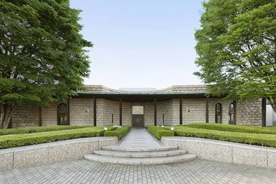
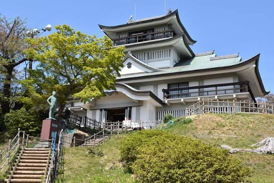
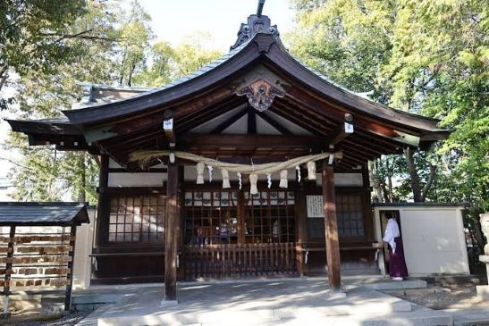
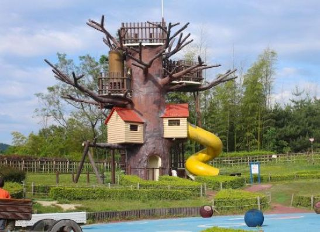

こちらのウェブページでは、小牧市内の観光スポットを紹介するウェブサイトです。
全画面をご覧になられたい場合はこちらのリンクからアクセス

小牧市にある本格的な美術館。国内外の優れた絵画や彫刻、工芸品など多彩なコレクションを所蔵しており、落ち着いた空間でじっくりと美術鑑賞を楽しむことができます。
詳細の内容が気になる方はこちらのメナード公式サイトからご覧になれます。

織田信長が最初に築いた城として知られる小牧山に建つ城。現在は歴史資料館として公開されており、天守閣からは濃尾平野を一望できる絶景スポットとなっています。
気になる方は公式サイトからご覧になれます。

天下の奇祭「豊年祭」で世界的に有名な由緒ある神社。五穀豊穣や子孫繁栄、万物育成の信仰を集めており、国内だけでなく海外からも多くの観光客が訪れます。
詳細の内容が気になる方はこちらの田縣神社の公式サイトからご覧になれます。

豊かな自然に囲まれた広大な総合公園。四季折々の花々が楽しめるほか、動物ふれあい広場やちびっこ動物園、ソリ遊びができる芝生などがあり、ファミリーに大人気です。
詳細の気になる方はこちらの小牧市の公式サイトからご覧になれます。